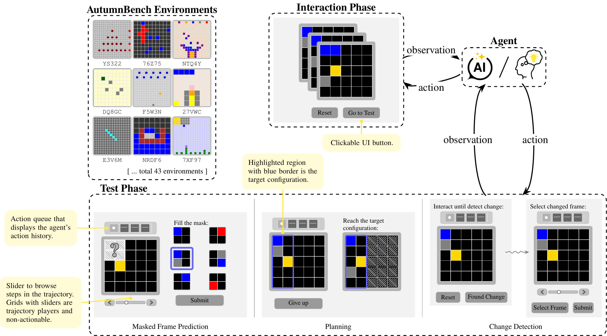

Benchmarking World-Model Learning
with Environment-Level Queries
A behavior-based benchmark for world-model learning. 517 humans versus five frontier AI models.
Archana Warrier · Dat Nguyen · Michelangelo Naim · Moksh Jain · Yichao Liang · Karen Schroeder · Cambridge Yang · Joshua B. Tenenbaum · Sebastian Vollmer · Kevin Ellis · Zenna Tavares
ICML 2026 · PMLR 306, Seoul
Basis Research Institute · DFKI · Harvard · Mila / Universite de Montreal · Cambridge · MIT · Cornell
Roadmap
Where we are going, in five parts
Does a learned model answer questions about the whole environment?
In one line. A world model is an agent's internal model of how its environment works. WorldTest is a behavior-based way to test whether a learned world model can answer many different questions about an environment, not just predict the next frame. We use it to compare 517 humans against five frontier AI models.
Current evaluations only test what is measurable from one observed run, such as next-frame prediction. They never check broader understanding of the environment.
Ask environment-level queries: questions whose answers depend on the whole environment. Score them purely by behavior, so any agent, including a human, can be compared.
On AutumnBench, humans substantially outperform all five frontier models on every environment and every task type.
Why world models matter
A flexible, predictive, counterfactual understanding of how an environment works. Learning one is argued to be pivotal for the next step in AI.
A worked example. Someone who cooks regularly builds an internal model of their kitchen: where tools live, how appliances behave. That one model is general-purpose. It supports many different everyday capabilities about the same environment, not just a single task.
Estimate how long the hidden contents of a covered pot will take to finish cooking, from the steam and the elapsed time.
Recognize and adapt to changes in the kitchen, such as a knife that has been moved to a different drawer.
Plan a sequence of actions to complete a set of recipes, ordering steps so everything comes together.
A good world model answers many such different questions about one environment. World models are central to flexible reasoning and planning, which is why we want to measure how well they are learned.
Why current evaluations fall short
World models are central to flexible reasoning and planning, yet we mostly measure them one trajectory at a time
The gap. Today's metrics test only properties measurable from one observed interaction. A general-purpose world model should answer many different questions about an environment, including its global structure and counterfactual consequences. We do not test that.
Trajectory-level metrics such as next-frame prediction (does the model predict the next observation) and task return (does it score well on one fixed goal). Both read off a single observed run.
Whether the model supports diverse questions: the environment's global structure and the counterfactual consequences of actions it has not yet seen. A model can ace next-frame prediction and still understand the world poorly.
If a learned model is good, it should generalize to many questions about the same environment. So that is what we should measure.
The evaluation landscape and what it misses
Four families of benchmarks each probe an agent's knowledge in an incomplete way. None unifies a representation-agnostic, reward-free test of environment-level queries.
Infer hidden rules from a few static examples (ARC, RAVEN, CLEVR variants).
Misses: no learning through interaction with a dynamic environment.
Require a fixed output format (next frames, programs, causal graphs) scored by format-specific proxies.
Misses: narrow targets prevent fair comparison across agent types.
Decision-making with explicit rewards (Atari, Gym, Procgen, NetHack).
Misses: measures task success, not world-model quality; a memorized policy can win.
Separate learning from evaluation (unsupervised RL, in-context RL).
Misses: both phases share one environment with reward signals; no structural or counterfactual test.
Punchline. AutumnBench is the only benchmark that is representation-agnostic AND reward-free in training AND uses a modified test environment. It is a POMDP, the most general environment type.
No predefined output format at test.
Interaction carries no reward signal.
Tested in a changed environment.
What non-interactive looks like: infer from fixed examples
Two classic benchmarks. ARC (Chollet, 2019): infer a grid rule from input to output examples. CLEVR (Johnson et al., 2017): answer a compositional question about one rendered scene. In both, you never act in the world.
The common thread. Both are static: you infer from fixed examples or one rendered image, and never act in the environment to gather its dynamics. WorldTest's move: let the agent interact with a live world first, learn the dynamics by doing, then answer.
The key idea: environment-level queries
Questions whose answers depend on the entire environment, not on one observed trajectory
Definition. An environment-level query is a question about a property of the whole environment. Answering it requires understanding the underlying rules, not just replaying what was seen. Contrast with a trajectory-level metric like next-frame prediction, which only checks one run.
What is hidden behind an occlusion. Infer the parts of the environment you cannot directly see.
Detect a change in the environment's dynamics. Notice when a rule of the world has shifted.
Determine whether one state is reachable from another. Reason about the global structure of what is possible.
These are the kinds of questions a flexible world model should handle. The next step is a way to score them fairly across very different agents.
WorldTest: a two-phase, behavior-based protocol
Evaluate world-model learning via environment-level queries, without constraining the agent's representation or tying interaction to a fixed reward
The agent explores on its own with no external goals or rewards. It may reset the environment to its initial state at any time, to test hypotheses. It ends the phase when it chooses; finite resources, not a hard clock, limit exploration.
A query becomes a challenge environment: the same world with one or more components changed (its transitions, observations, or actions) plus an explicit objective. Completing the objective = answering the query. The score depends only on behavior here.
Scored by behavior alone. No peeking inside the agent, no manual or AI judging, so humans and AI compare on equal terms.
Reward-free exploration encourages learning transferable dynamics, not optimizing one task-specific objective.
The test compiles each query into an objective, directly measuring whether the model supports downstream inference and planning.
The protocol, step by step
A query is a question about the whole environment. WorldTest compiles it into a challenge environment with an explicit goal, then scores the agent's behavior there.
The transformation. A fixed rule (call it tau) takes the base reward-free environment plus a hidden task parameter and produces a modified environment, an objective, and a horizon H. The modified environment differs from the base by changes to its state, dynamics, observations, or rewards. Completing the objective answers the query.
Reveal the task type: the challenge actions, observations, and the form of the objective. The hidden parameters stay secret.
Explore the base environment reward-free. Reset to the start or proceed at will, building an internal model.
On proceeding, sample the hidden parameters and apply tau to build the modified environment, objective, and horizon H.
Produce a policy from the learned model and from knowledge of how tau reshaped the world.
Run the policy in the modified environment for H steps.
Score the resulting behavior against the objective. No internals, no judge.
Because the parameters are hidden until the agent proceeds, it cannot prepare for one specific answer. It must learn dynamics that generalize across the whole challenge space.
The Autumn language
AutumnBench worlds are written in Autumn, a functional reactive language for specifying causal interactions in 2D grids (Das et al. 2023).
Why Autumn. It lets you specify environments succinctly, expressively, and extensibly. Crucially, one specification drives both a text-based interface for AI agents and a browser-based graphical interface for humans, so the exact same world is played by both.
A single functional reactive specification captures the causal rules of a 2D-grid world. Specs are compact and easy to extend with new environments.
The same spec renders as text for AI agents and as a browser GUI for humans. Both play an identical world, so their scores are directly comparable.
A grid state is represented as a 2D array of color strings: one color per cell. This shared format is what both interfaces read from and render.
Functional reactive means the world is described by how each cell reacts to events over time, rather than by hand-coded update loops. One world, two interfaces, fair comparison.
AutumnBench: WorldTest made concrete
43 interactive grid-world environments · 129 tasks · three query families · the same benchmark is playable by humans (browser) and AI (text). Grids 3x3 to 25x25, up to 5 object types each, 17 of 43 stochastic.

Predict the masked content of the final frame by choosing one of six options. Tests prediction of hidden state.
One rule changes mid-test. Report the earliest timestep at which it changed. Tests detecting shifts in dynamics.
Drive a subgrid into a target configuration with an action sequence. Tests long-horizon control and reachability.
The three challenges in detail
Each query family compiles into a scored challenge. Same benchmark, three different things to get right.
How scoring works. Every task is graded purely by behavior, with no inspection of the agent's internals, so a human and an AI are scored the same way. Below: what each task asks, and exactly how a point is awarded.
Watch a trajectory whose frames are partially masked, then predict the masked content of the final frame by choosing from six options (one matches ground truth).
Score: 1 if correct, else 0.
In a modified environment, one rule changes at some hidden timestep during the test. Report the earliest timestep at which the rule changes.
Score: 1 for the correct timestep, partial credit for late detection, 0 if too early.
Given a target configuration of a subgrid, interact and produce an action sequence that drives the subgrid into that target. Here reset is not available.
Score: 1 if the target is reached, else 0.
Together these probe three distinct abilities: prediction of hidden state, detecting change in the rules, and long-horizon planning.
How it was run: same benchmark, two interfaces
Humans play the exact same world in a browser; AI models play it in text. The behavior-only scoring lets us compare them directly.
517 participants recruited via Prolific and screened for attention and color blindness. They play in a browser GUI updating at roughly 3 to 8 frames per second. The reported human is an aggregate agent: the 80th-percentile score across 20 attempts per problem.
Five frontier reasoning models: Claude 4 Sonnet, Gemini 2.5 Pro, Gemini 2.5 Flash, o3, Qwen3-235b-a22b-thinking-2507. Each is given its full interaction history, the current grid state, the available actions, and a task-type description.
One trajectory per problem, due to cost constraints.
A simulator agent with ground-truth program access is included only as a reference point, not as a competitor. It shows what is achievable when the underlying rules are known.
The headline: humans beat every frontier model
517 human participants vs five frontier reasoning models (Claude 4 Sonnet, Gemini 2.5 Pro, Gemini 2.5 Flash, o3, Qwen3-235B). Human score = the 80th-percentile score across 20 attempts per problem. A simulator with ground-truth program access is shown only as a reference.

Models did better on stochastic environments than deterministic ones; humans were nearly identical across both. Higher cost-per-problem helped in only about 37% of masked-frame and planning tasks and about 33% of change-detection.
Stochastic vs deterministic: a telling split
Stochastic = the same action from the same state can give different outcomes; deterministic = it always gives the same outcome
Finding. The five reasoning models scored significantly higher on stochastic environments than on deterministic ones. Humans were nearly identical across both.
Models did much better on stochastic environments than on deterministic ones.
Performance that swings with the kind of environment is a sign of fragile, surface-level understanding rather than a transferable grasp of how the world works.
Humans scored nearly the same on stochastic and deterministic environments.
Consistent performance regardless of randomness is a signature of genuine model-based understanding: the same grasp of the rules transfers across both kinds of world.
This split is qualitative here: it points to where the models' understanding breaks down, not a single headline number.
More compute is not the fix
Spending more on each problem rarely closed the gap to human performance
Question. Would simply giving the models more compute per problem close the gap? Measured by whether higher cost-per-problem improved performance.
In most cases more compute did not help. This points to reasoning limitations beyond scaling, not a shortage of compute.
Humans explore by experimenting
During exploration the agent can reset the environment to its initial state at will. Humans treat reset as an experimental tool; models mostly do not.
The signature. Humans reset at least once in every environment and beat the per-environment model reset-mean in 33 of 43. Models often skip resets entirely: Claude in 31 environments, Qwen in 8, Gemini Pro in 7, Gemini Flash in 4, o3 in 3.
After a reset, humans replay similar action sequences to the ones they ran before, holding most steps fixed while varying a few. That high overlap is evidence of systematic hypothesis testing: rerun a controlled experiment to isolate one rule. Models that skip resets rarely run such controlled repeats.
Humans update their beliefs
When test observations contradict the rules an agent learned, the better agent revises what it believes. Perplexity here means how surprised an agent is by what it sees next; lower perplexity means better predictions.
The contrast. Faced with evidence that contradicts what they learned, models often keep their old rules, while humans form sharper, better-calibrated expectations as they explore.
Reasoning models often fail to update their beliefs when faced with contradictory evidence, especially in masked frame prediction.
Even after they notice that test observations contradict the rules they learned, they keep predicting from the original rules.
Humans reach lower normalized perplexity over their interaction: a lower area-under-the-curve of perplexity as exploration proceeds.
In plain words, they are less surprised by what comes next. Their learning is more targeted and better calibrated, so they revise toward the rules that actually hold.
Closing the gap likely needs not only better priors but advances in flexible belief updating, not just more compute.
What the gap really means
The human advantage is not mainly about raw knowledge; it traces to two capabilities the models lack
Conclusion. Current frontier models lack the flexible, predictive understanding that characterizes human-like world models. The gap is not mainly a knowledge gap. It traces to two capabilities: how an agent designs experiments to test its hypotheses, and how it revises its beliefs when the evidence contradicts them.
Humans use resets and interventions to test hypotheses: they reset in every environment and replay similar action subsequences around resets. Models often skip resets entirely and spend almost none of their actions probing the world.
Humans revise their beliefs under contradiction and reach lower perplexity over interaction. Models often keep relying on the rules they first learned, even after noticing that the test observations contradict them.
More compute does not supply either capability: 42% of environments saw no benefit from extra compute. The missing pieces are behavioral, not just scale.
Limitations and what is next
AutumnBench demonstrates WorldTest in a grid-world; the framework itself is broader
Scope. AutumnBench is one instantiation of WorldTest in 2D grid-worlds. The protocol does not depend on grids: it is a general recipe for compiling environment-level queries into behavior-scored challenge environments, with open directions on both the benchmark side and the methodology side.
Future work may instantiate WorldTest in physics-rich environments, robotics, multi-agent systems, and other rich-dynamics domains, well beyond 2D grids.
Model performance is sensitive to prompt formulation. The authors recommend reporting results across multiple prompt formulations with variance bars.
The reset-as-experiment account is correlational. Establishing a causal link needs interventional designs, left to future work.
These caveats bound the present claims without weakening the framework: WorldTest is the recipe, and AutumnBench is just the first dish.
Recap: test, benchmark, finding
One protocol, one benchmark, one clear result about where frontier models stand
In sum. WorldTest is a behavior-based, two-phase, representation-agnostic protocol that evaluates world-model learning via environment-level queries. AutumnBench instantiates it; 517 humans substantially outperform five frontier reasoning models, and more compute does not close the gap.
A two-phase, representation-agnostic protocol: explore reward-free, then answer an environment-level query compiled into an explicit objective. Scored by behavior alone, so any agent type compares fairly.
AutumnBench: 43 environments, 129 tasks, three query families (masked frame prediction, change detection, planning), playable by both humans and AI.
517 humans substantially outperform all five frontier reasoning models on every environment and every task type, and more compute does not close the gap.
Takeaway and resources
Warrier et al., ICML 2026 · public dataset, web GUI, interpreter, and baselines all available
Bottom line. Current frontier models lack the flexible, predictive understanding of human-like world models. Closing the gap likely needs better priors and advances in strategic experimental design, uncertainty quantification, and flexible belief updating, not just more compute.
A representation-agnostic, automatically scored test of world-model learning that puts humans and AI on equal footing.
43 environments, 129 tasks, three query families, built in the Autumn language for causal 2D-grid interactions and designed to be extensible.
Web GUI: autumn.basis.ai
Interpreter: github.com/BasisResearch/Autumn.cpp
Baselines: github.com/BasisResearch/MARAProtocol
The public AutumnBench dataset, browser GUI, Autumn interpreter (WASM / Python / Julia), and reasoning-model baselines are all available.